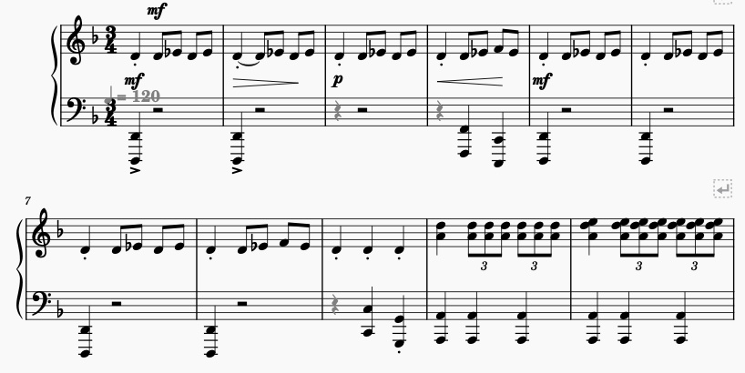
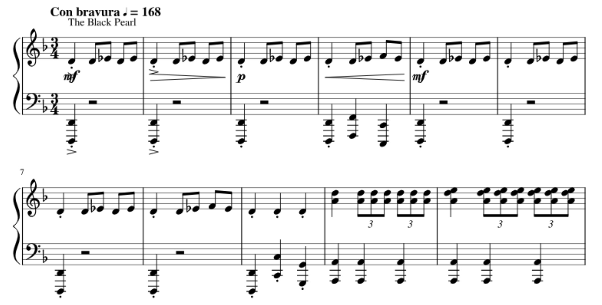

When transcribing my pdf to MuseScore via the OMR engine, although majority of the notes were correct, I found multiple errors in terms of rhythm and tempo.
In comparison to our group activity on Tuesday, the piece of music we selected had far more errors with large groups of notes missing from the page.
 